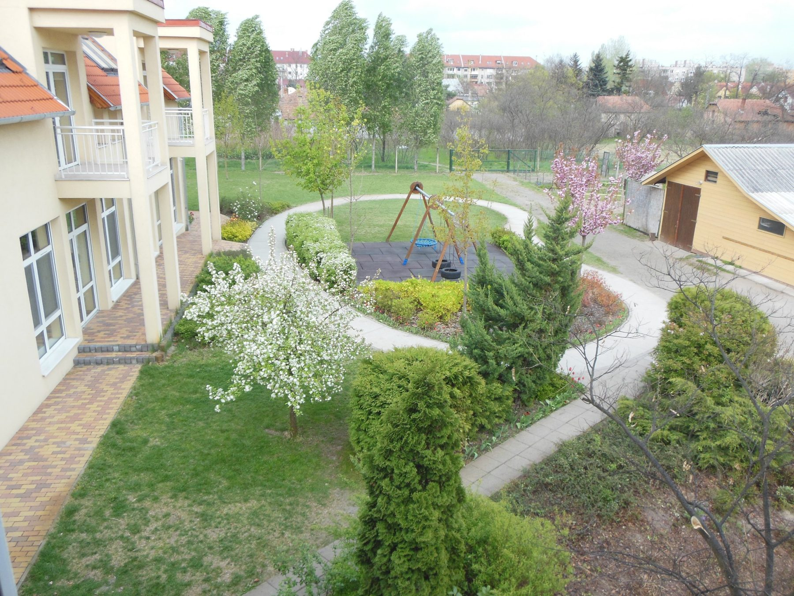

Szeretettel köszöntünk a Bárányka Óvoda honlapján!

Ismerjen meg minket
Küldetésünk
„Keresztyén szellemű nevelésünk célja, hogy a gyermekek … Istenben való hitben élő személyiséggé váljanak.”
TovábbCéljaink
„Isten Igéjét az óvodai élet láncolatába, mozzanataiba inkább csendesen szeretnénk beleszőni.”
TovábbCsoportjaink
„Részben osztott vegyes életkorú két csoportunk van: igyekszünk egy nagycsaládi légkört kialakítani.”
TovábbKörnyezetünk
„Hatalmas, 2300 m²-es védett, füvesített udvarunk van (külön konyhakerti résszel, melyet a gyermekek gondoznak).”
TovábbElnevezésünk
„Legeltesd az én bárányaimat!”
A „Báránykák” azok, akik a „Jézus a Jó Pásztor” bibliai példázatban Jézushoz tartoznak; akik elveszettek, de a Jó Pásztor megtalálta őket, és életét adta értük.
Óvodai jelentkezés
Szívesen látunk mindenkit, aki szeretne bekukkantani hozzánk. Az előre tervezés miatt a későbbi tanévekre is lehet már előzetesen jelentkezni, fel lehet már most is iratkozni. Legegyszerűbben e-mailen érdemes felvenni a kapcsolatot velünk.
Napirendünk
Óvodai életünk- 7–8érkezés az ügyeleti csoportba
- 8–10szabadon választott tevékenység, tízórai
- 10–10.30éneklés, beszélgetés, áhítat
- 10.30–12levegőzés: udvar, séta, kirándulás
- 12–13ebédelés
- 13–15.15történet vagy mese, pihenés
- 15.15–17uzsonna, szabad játék